<!doctype html>
<html lang="zh-CN">
  <head>
    <meta charset="utf-8" />
    <meta name="viewport" content="width=device-width, initial-scale=1" />
    <meta name="description" content="最近 Github 上了个骚功能。允许用户使用用户名同名仓库的 README.md 文件作为自己的简介页面。这个功能已经被玩出花来了。比如这位同学把做了一个自动更新的 README.md 拿来放博客和 Timeline。那么问题来了，能不能把语雀知识库放到 README.md 上。那当然可以..." />
    <title>使用语雀 Webhooks 和 Netlify Functions 自动同步生成 Github Profile README · 生活倒影</title>
    <link rel="stylesheet" href="../styles.css?v=20261006-mincho" />
  </head>
  <body>
    <main class="article-shell">
      <a class="back-link" href="../index.html">← 首页</a>
      <div class="article-layout">
        
        <article class="article-page">
          <header class="article-header">
            <h1>使用语雀 Webhooks 和 Netlify Functions 自动同步生成 Github Profile README</h1>
            <time datetime="2020-07-18">2020-07-18</time>
          </header>
          <div class="article-content">
            <p>最近 Github 上了个骚功能。允许用户使用用户名同名仓库的 README.md 文件作为自己的简介页面。这个功能已经被玩出花来了。比如这位同学把做了一个自动更新的 README.md 拿来放博客和 Timeline。</p><p><figure>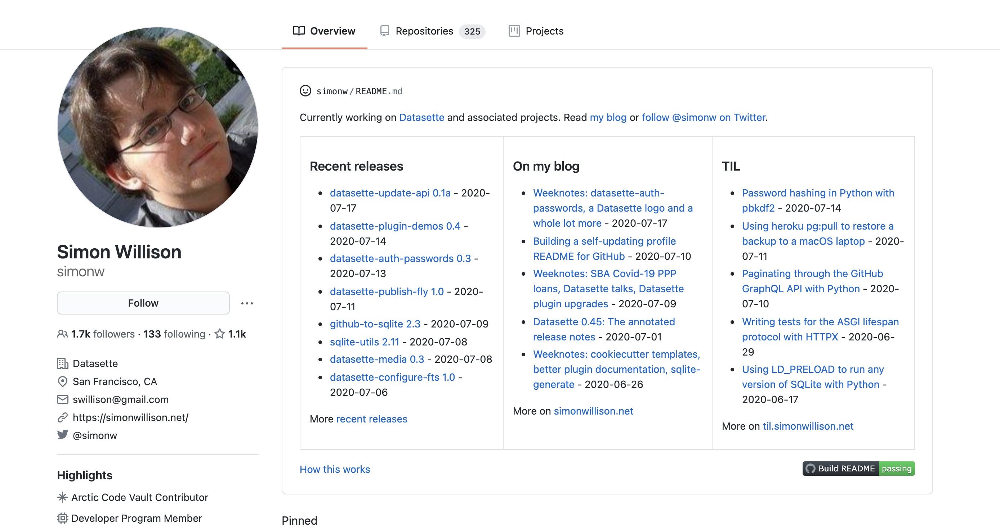</figure></p><p>那么问题来了，能不能把语雀知识库放到 README.md 上。</p><p>那当然可以。。</p><h3 id="section-1">准备工作：</h3><h4 id="8dQXQ">创建 Github 帐号同名 Repo</h4><p>创建一个跟你的帐号一样的 Repo 就可以了。先什么都不用做</p><h4 id="AHAWc">从语雀获取 token</h4><p>右上角菜单，账户设置 -&gt; Token，新建一个 token，赋予知识库和文档的读权限。 <a href="https://www.yuque.com/settings/tokens" target="_blank">https://www.yuque.com/settings/tokens</a></p><p><figure>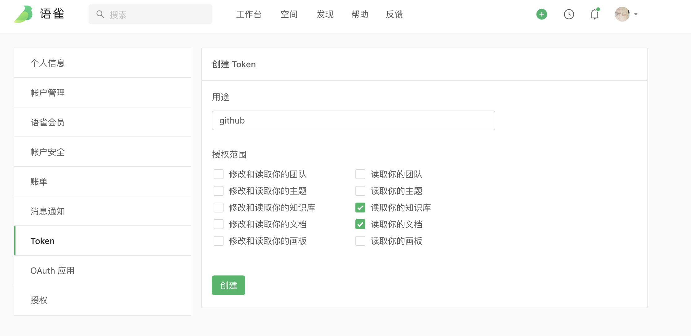</figure></p><p>创建完成之后把这个 token 拷贝下来。在 Github 上仓库的设置 -&gt; Secrets 中新建一个 Secrets，命名为 <code>YUQUE_TOKEN</code> ，把语雀的 token 填进来。</p><p><figure>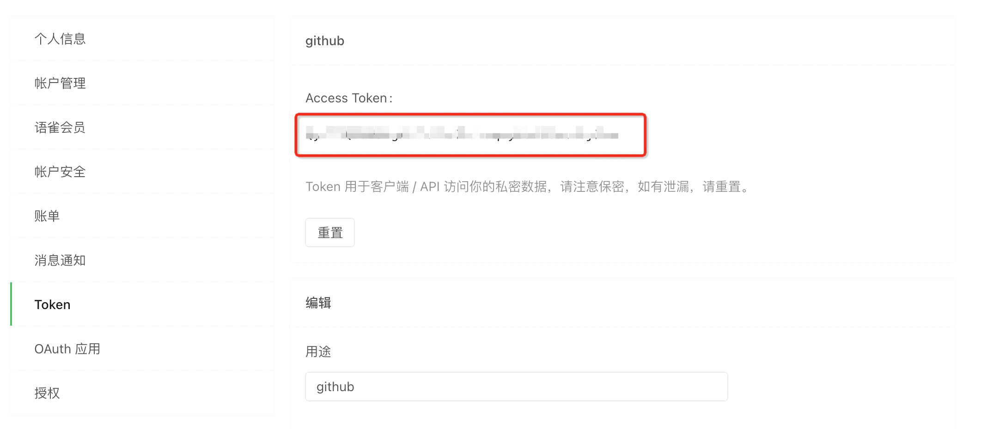</figure></p><p><figure>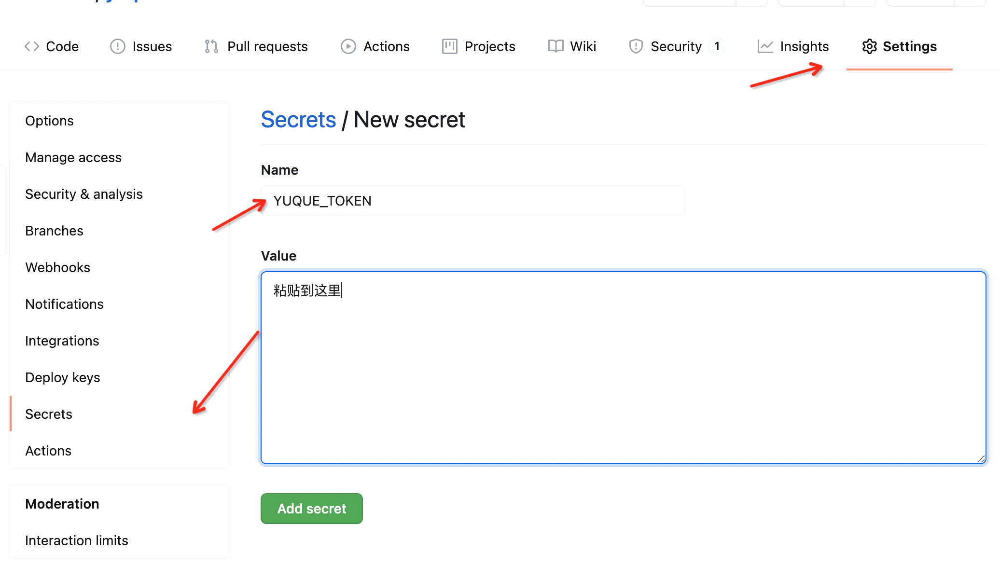</figure></p><h3 id="section-2">配置 Github Action: </h3><p>然后在仓库的 Actions 下创建一个新的 workflow</p><h4 id="wfwyD"><span>使用 actions/yuque-to-readme 生成 README.md</span></h4><p>在右边的 Marketplace 里搜 yuque，找到 yuque to readme 的 action。</p><p><figure>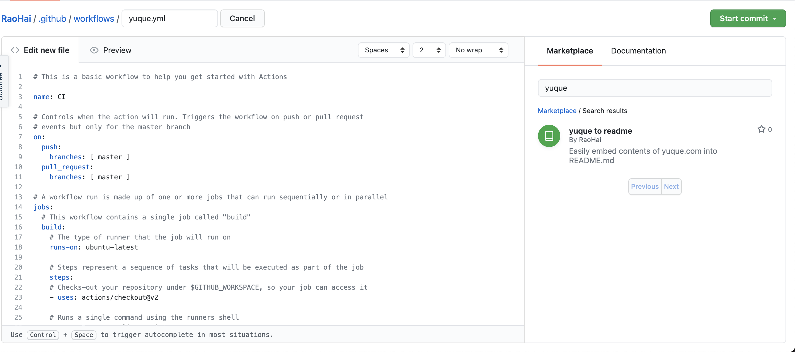</figure></p><p>点进去。点<span>右边的复制按钮，在左边的 action 编辑器，在 </span><code><span>- uses: actions/checkout@v2</span></code> 后<span>粘贴。</span></p><p><figure>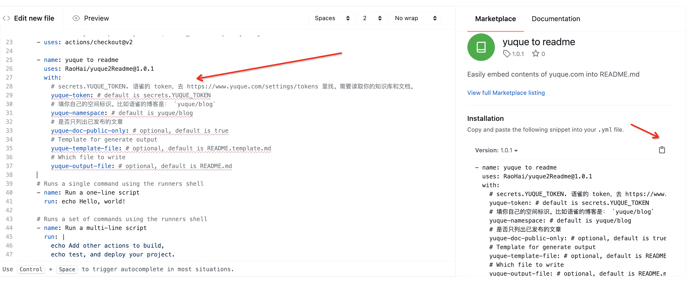</figure></p><p>粘贴之后提示要配置这些选项：</p><ul><li>yuque-token:  </li></ul><ul data-lake-indent="1"><li>因为刚刚配置了 Github 的 Secrets，所以这里写 <code>${{secrets.YUQUE_TOKEN}}</code> 即可。</li></ul><ul><li>yuque-namespace:</li></ul><ul data-lake-indent="1"><li>这里填你需要拿来展示的知识库 namespace。比如要展示这个的目录，就写<span> </span><code><span>yuque/blog</span></code> <figure>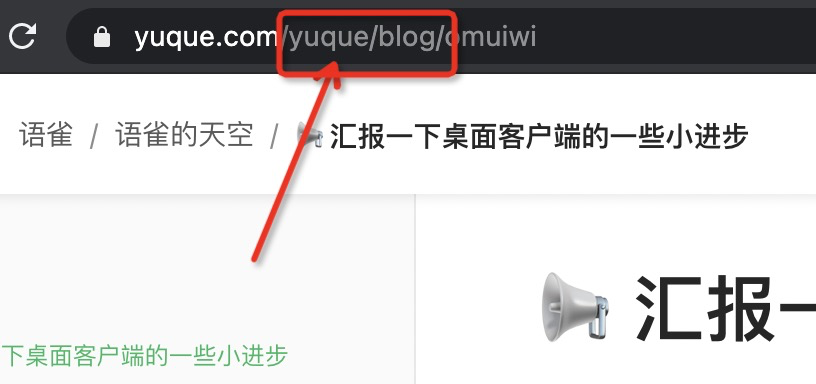</figure></li></ul><ul><li>yuque-doc-public-only: </li></ul><ul data-lake-indent="1"><li>是否仅展示已发布的文章。默认为 true，这项可以删掉不填。</li></ul><ul><li>yuque-template-file: </li></ul><ul data-lake-indent="1"><li>readme 模板。因为 action 最后会覆盖掉 README.md，所以必须指定一个模板 README 文件用于生成最终的 README.md。不填也没关系，会使用默认的模板。</li></ul><ul><li>yuque-output-file: </li></ul><ul data-lake-indent="1"><li>输出文件。默认是 README.md</li></ul><h4 id="8SckS">配置自动提交到 master</h4><p>改完了还不够，必须自动提交到 master 才能生效。这里直接拷过去就可以了：</p><pre><code class="language-yaml">    - name: Commit and push if changed
      run: |-
        git add .
        git diff
        git config --global user.email &quot;github-action-bot@example.com&quot;
        git config --global user.name &quot;GitHub Action Bot&quot;
        git commit -m &quot;Updated README&quot; -a || echo &quot;No changes to commit&quot;
        git push</code></pre><h4 id="rx9DE">完整配置文件</h4><pre><code class="language-yaml"># This is a basic workflow to help you get started with Actions

name: CI

# Controls when the action will run. Triggers the workflow on push or pull request
# events but only for the master branch
on:
  push:
    branches: [ master ]
  pull_request:
    branches: [ master ]

# A workflow run is made up of one or more jobs that can run sequentially or in parallel
jobs:
  # This workflow contains a single job called &quot;build&quot;
  build:
    # The type of runner that the job will run on
    runs-on: ubuntu-latest

    # Steps represent a sequence of tasks that will be executed as part of the job
    steps:
    # Checks-out your repository under $GITHUB_WORKSPACE, so your job can access it
    - uses: actions/checkout@v2

    - name: yuque to readme
      uses: RaoHai/yuque2Readme@1.0.2
      with:
        # secrets.YUQUE_TOKEN. 语雀的 token，去 https://www.yuque.com/settings/tokens 里找。需要读取你的知识库和文档。
        yuque-token: ${{secrets.YUQUE_TOKEN}}
        # 填你自己的空间标识。比如语雀的博客是： `yuque/blog`
        yuque-namespace: luchen/buzhou
        # 是否只列出已发布的文章
        yuque-doc-public-only: true
        # Which file to write
        yuque-output-file: README.md

    - name: Result
      run: |-
        cat README.skylark.md

    - name: Commit and push if changed
      run: |-
        git add .
        git diff
        git config --global user.email &quot;github-action-bot@example.com&quot;
        git config --global user.name &quot;GitHub Action Bot&quot;
        git commit -m &quot;Updated README&quot; -a || echo &quot;No changes to commit&quot;
        git push
</code></pre><h4 id="KEIKl">看看效果！</h4><p><figure></figure></p><p>看起来很不错。</p><h3 id="section-3">自定义 README.md 模板</h3><p>acions/yuque-to-readme 支持自定义 README 模板。使用 handlebars 语法。可以自己写<span> README 文件，中间插入一段语雀的文章列表。</span></p><p><figure>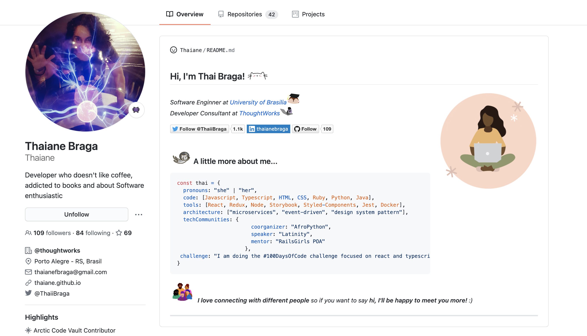</figure></p><p>在 Repo 下创建一个 README.yuque.template.md 文件，自由发挥。中间的 handlebars 语法中的变量可以参考 <a href="https://www.yuque.com/yuque/developer/docserializer" target="_blank">https://www.yuque.com/yuque/developer/docserializer</a>。</p><pre><code class="language-markdown">&lt;h2&gt;Hi, I'm Rao Hai! &lt;img src=&quot;https://github.githubassets.com/images/mona-whisper.gif&quot; height=&quot;24&quot; /&gt;&lt;/h2&gt;
&lt;img align='right' src=&quot;https://media.giphy.com/media/836HiJc7pgzy8iNXCn/giphy.gif&quot; width=&quot;230&quot; /&gt;
&lt;p&gt;&lt;em&gt;Front-end Engineer at &lt;a href=&quot;https://www.alipay.com/&quot;&gt;Alipay&lt;/a&gt; . &lt;/em&gt;

&lt;h4&gt; Latest Blog Posts: &lt;/h4&gt;

{{#each record}}
  - [{{title}} ( {{short created_at &quot;MM-dd&quot;}} · {{math likes_count &quot;*&quot; 7}} 颗稻谷)](https://yuque.com/{{@root.namespace}}/{{slug}})
{{/each}}


&lt;p align=&quot;right&quot;&gt;&lt;a href=&quot;https://www.yuque.com/luchen/buzhou&quot;&gt;➡️ More blog posts&lt;/a&gt;&lt;/p&gt;
&lt;p align=&quot;right&quot;&gt;
  Generated by
  &lt;a href=&quot;https://www.yuque.com&quot;&gt;语雀&lt;/a&gt;,
  &lt;a href=&quot;https://github.com/marketplace/actions/yuque-to-readme&quot;&gt;yuque to readme&lt;/a&gt;,
  And Github Actions.
&lt;/p&gt;
</code></pre><p>改一下 action 的配置，增加 <span> yuque-template-file，指向刚刚创建的 README.yuque.template.md。</span></p><p><figure>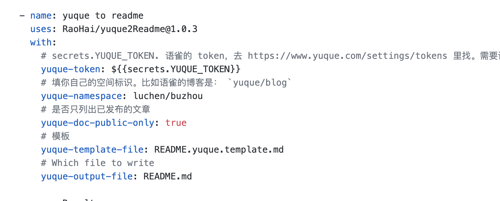</figure></p><p><span>提交后等一分钟刷新看下。是不是很棒。</span></p><p><span><figure>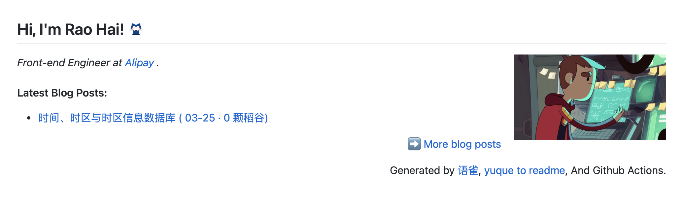</figure></span></p><h3 id="section-4">语雀文档更新后自动更新 README</h3><p>现在只做到了从语雀更新 README。下一步是要解决在语雀文章增加、编辑的时候自动更新 README 的问题。</p><p>这里有两种方案：</p><ul><li>一种是配置 Actions 的定时调度。例如把 Actions 中的 schedule 配置为每小时自动运行一次。</li><li>另一种是使用语雀的 <a href="https://www.yuque.com/yuque/developer/doc-webhook" target="_blank">Webhooks</a> 能力，在语雀文档更新时自动唤起 Github Workflow，完成 README 的更新。</li></ul><p>使用第二种方案有个问题。Github 并没有原生提供一个 「唤起 Workflow」 的 Webhook API。所以我们需要借助服务端能力完成这个功能。这里选用 <a href="https://docs.netlify.com/functions/overview/" target="_blank">Netlify Functions</a>，是一个基于 AWS Lambda 的 Serverless 服务。</p><p>整个功能的架构应该是这样的：</p><p><figure>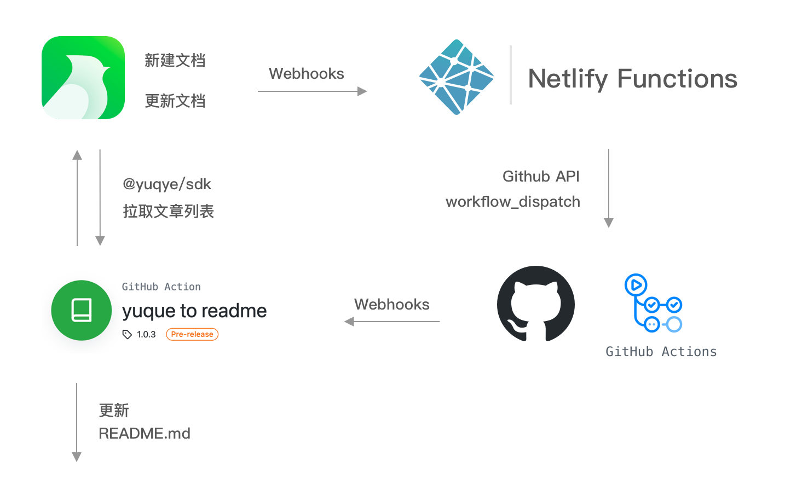</figure></p><p>具体逻辑可以参看 <a href="https://github.com/RaoHai/RaoHai/blob/master/src/webhook.js" target="_blank">https://github.com/RaoHai/RaoHai/blob/master/src/webhook.js</a> ，很简单，不赘述了。</p>
          </div>
        </article>
      </div>
    </main>
    
  </body>
</html>
